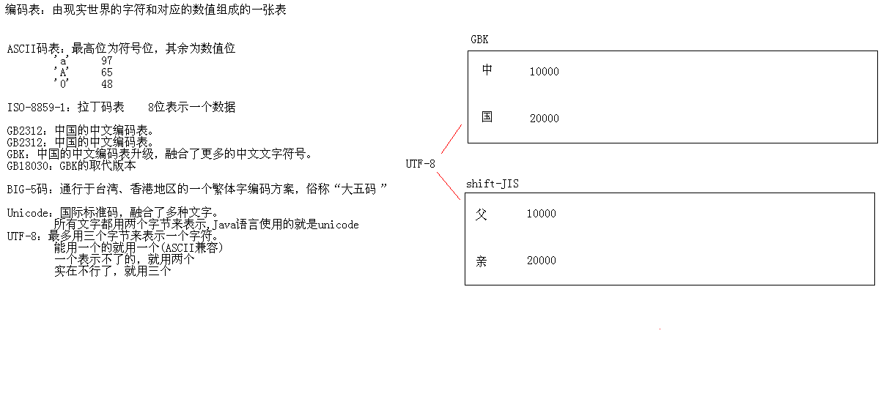
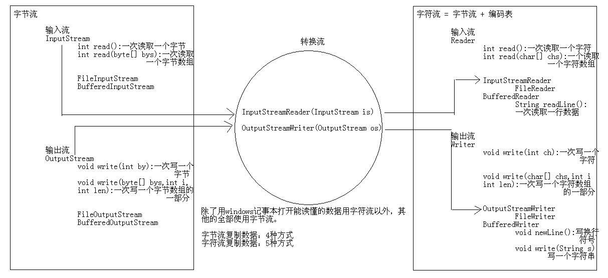

总结¶
1:字符流(掌握) (1)字节流操作中文数据不是特别的方便，所以就出现了转换流。 转换流的作用就是把字节流转换字符流来使用。 (2)转换流其实是一个字符流 字符流 = 字节流 + 编码表 (3)编码表 A:就是由字符和对应的数值组成的一张表 B:常见的编码表 ASCII ISO-8859-1 GB2312 GBK GB18030 UTF-8 C:字符串中的编码问题 编码 String -- byte[] 解码 byte[] -- String (4)IO流中的编码问题 A:OutputStreamWriter OutputStreamWriter(OutputStream os):默认编码，GBK OutputStreamWriter(OutputStream os,String charsetName):指定编码。 B:InputStreamReader InputStreamReader(InputStream is):默认编码，GBK InputStreamReader(InputStream is,String charsetName):指定编码 C:编码问题其实很简单 编码只要一致即可 (5)字符流 Reader |--InputStreamReader |--FileReader |--BufferedReader Writer |--OutputStreamWriter |--FileWriter |--BufferedWriter (6)复制文本文件(5种方式) 2:IO流小结(掌握) IO流 |--字节流 |--字节输入流 InputStream int read():一次读取一个字节 int read(byte[] bys):一次读取一个字节数组 |--FileInputStream |--BufferedInputStream |--字节输出流 OutputStream void write(int by):一次写一个字节 void write(byte[] bys,int index,int len):一次写一个字节数组的一部分 |--FileOutputStream |--BufferedOutputStream |--字符流 |--字符输入流 Reader int read():一次读取一个字符 int read(char[] chs):一次读取一个字符数组 |--InputStreamReader |--FileReader |--BufferedReader String readLine():一次读取一个字符串 |--字符输出流 Writer void write(int ch):一次写一个字符 void write(char[] chs,int index,int len):一次写一个字符数组的一部分 |--OutputStreamWriter |--FileWriter |--BufferedWriter void newLine():写一个换行符 void write(String line):一次写一个字符串 3:案例(理解 练习一遍) A:复制文本文件 5种方式(掌握) B:复制图片(二进制流数据) 4种方式(掌握) C:把集合中的数据存储到文本文件 D:把文本文件中的数据读取到集合并遍历集合 E:复制单级文件夹 F:复制单级文件夹中指定的文件并修改名称 回顾一下批量修改名称 G:复制多级文件夹 H:键盘录入学生信息按照总分从高到低存储到文本文件 I:把某个文件中的字符串排序后输出到另一个文本文件中 J:用Reader模拟BufferedReader的特有功能 K:模拟LineNumberReader的特有功能 ```` # 转换流出现的原因及思想 ```java package cn.itcast_01; import java.io.FileInputStream; import java.io.IOException; /* * 字节流读取中文可能出现的小问题： */ public class FileInputStreamDemo { public static void main(String[] args) throws IOException { // 创建字节输入流对象 FileInputStream fis = new FileInputStream("a.txt"); // 读取数据 // int by = 0; // while ((by = fis.read()) != -1) { // System.out.print((char) by); // } byte[] bys = new byte[1024]; int len = 0; while ((len = fis.read(bys)) != -1) { System.out.print(new String(bys, 0, len)); } // 释放资源 fis.close(); } }
- 由于字节流操作中文不是特别方便，所以， java就提供了转换流。
- 字符流=字节流+编码表。
编码表概述和常见的编码表¶
-
编码表
• 由字符及其对应的数值组成的一张表 常见编码表
• ASCII/Unicode 字符集
• ISO-8859-1
• GB2312/GBK/GB18030
• BIG5
• UTF-8 
字符串中的编码问题¶
-
编码
• 把看得懂的变成看不懂的
-
解码
• 把看不懂的变成看得懂的
package cn.itcast_01; import java.io.UnsupportedEncodingException; import java.util.Arrays; /* * String(byte[] bytes, String charsetName):通过指定的字符集解码字节数组 * byte[] getBytes(String charsetName):使用指定的字符集合把字符串编码为字节数组 * * 编码:把看得懂的变成看不懂的 * String -- byte[] * * 解码:把看不懂的变成看得懂的 * byte[] -- String * * 举例：谍战片(发电报，接电报) * * 码表：小本子 * 字符 数值 * * 要发送一段文字： * 今天晚上在老地方见 * * 发送端：今 -- 数值 -- 二进制 -- 发出去 * 接收端：接收 -- 二进制 -- 十进制 -- 数值 -- 字符 -- 今 * * 今天晚上在老地方见 * * 编码问题简单，只要编码解码的格式是一致的。 */ public class StringDemo { public static void main(String[] args) throws UnsupportedEncodingException { String s = "你好"; // String -- byte[] byte[] bys = s.getBytes(); // [-60, -29, -70, -61] //获得编码字符数组 // byte[] bys = s.getBytes("GBK");// [-60, -29, -70, -61] // byte[] bys = s.getBytes("UTF-8");// [-28, -67, -96, -27, -91, -67] System.out.println(Arrays.toString(bys)); //数组转换成字符串 // byte[] -- String String ss = new String(bys); // 你好 // String ss = new String(bys, "GBK"); // 你好 // String ss = new String(bys, "UTF-8"); // ??? System.out.println(ss); } }
转换流概述¶
-
OutputStreamWriter 字符输出流
• public OutputStreamWriter(OutputStream out)
• public OutputStreamWriter(OutputStream out,String charsetName)
package cn.itcast_02; import java.io.FileOutputStream; import java.io.IOException; import java.io.OutputStreamWriter; /* * OutputStreamWriter(OutputStream out):根据默认编码把字节流的数据转换为字符流 //OutputStream out是个对象 * OutputStreamWriter(OutputStream out,String charsetName):根据指定编码把字节流数据转换为字符流 * 把字节流转换为字符流。 * 字符流 = 字节流 +编码表。 */ public class OutputStreamWriterDemo { public static void main(String[] args) throws IOException { // 创建对象 // OutputStreamWriter osw = new OutputStreamWriter(new FileOutputStream( // "osw.txt")); // 默认GBK // OutputStreamWriter osw = new OutputStreamWriter(new FileOutputStream( // "osw.txt"), "GBK"); // 指定GBK OutputStreamWriter osw = new OutputStreamWriter(new FileOutputStream( "osw.txt"), "UTF-8"); // 指定UTF-8 // 写数据 osw.write("中国"); // 释放资源 osw.close(); } }
-
InputStreamReader 字符输入流
• public InputStreamReader(InputStream in)
• public InputStreamReader(InputStream in,String charsetName)
package cn.itcast_02; import java.io.FileInputStream; import java.io.IOException; import java.io.InputStreamReader; /* * InputStreamReader(InputStream is):用默认的编码读取数据 * InputStreamReader(InputStream is,String charsetName):用指定的编码读取数据 */ public class InputStreamReaderDemo { public static void main(String[] args) throws IOException { // 创建对象 // InputStreamReader isr = new InputStreamReader(new FileInputStream( // "osw.txt")); // InputStreamReader isr = new InputStreamReader(new FileInputStream( // "osw.txt"), "GBK"); InputStreamReader isr = new InputStreamReader(new FileInputStream( "osw.txt"), "UTF-8"); // 读取数据 // 一次读取一个字符 int ch = 0; while ((ch = isr.read()) != -1) { System.out.print((char) ch); //这里还是需要使用(char)进行类型的转换,因为ch还是int类型 } // 释放资源 isr.close(); } }
OutputStreamWriter写数据¶
-
OutputStreamWriter写数据方法
• public void write(int c)
• public void write(char[] cbuf)
• public void write(char[] cbuf,int off,int len)
• public void write(String str)
• public void write(String str,int off,int len)
-
字符流操作要注意的问题
• flush()的作用
• flush()和close()的区别
package cn.itcast_03; import java.io.FileOutputStream; import java.io.IOException; import java.io.OutputStreamWriter; /* * OutputStreamWriter的方法： * public void write(int c):写一个字符 * public void write(char[] cbuf):写一个字符数组 * public void write(char[] cbuf,int off,int len):写一个字符数组的一部分 * public void write(String str):写一个字符串 * public void write(String str,int off,int len):写一个字符串的一部分 * * 面试题：close()和flush()的区别? * A:close()关闭流对象，但是先刷新一次缓冲区。关闭之后，流对象不可以继续再使用了。 * B:flush()仅仅刷新缓冲区,刷新之后，流对象还可以继续使用。 */ public class OutputStreamWriterDemo { public static void main(String[] args) throws IOException { // 创建对象 OutputStreamWriter osw = new OutputStreamWriter(new FileOutputStream( "osw2.txt")); // 写数据 // public void write(int c):写一个字符 // osw.write('a'); // osw.write(97); // 为什么数据没有进去呢? // 原因是：字符 = 2字节 // 文件中数据存储的基本单位是字节。 // void flush() //写入两个字符最后进行刷新一下 // public void write(char[] cbuf):写一个字符数组 // char[] chs = {'a','b','c','d','e'}; // osw.write(chs); // public void write(char[] cbuf,int off,int len):写一个字符数组的一部分 // osw.write(chs,1,3); // public void write(String str):写一个字符串 // osw.write("我爱林青霞"); // public void write(String str,int off,int len):写一个字符串的一部分 osw.write("我爱林青霞", 2, 3); // 刷新缓冲区 osw.flush(); // osw.write("我爱林青霞", 2, 3); // 释放资源 osw.close(); // java.io.IOException: Stream closed // osw.write("我爱林青霞", 2, 3); } }
InputStreamReader读数据¶
-
OutputStreamWriter读数据方法
• public int read()
• public int read(char[] cbuf)
package cn.itcast_03; import java.io.FileInputStream; import java.io.IOException; import java.io.InputStreamReader; /* * InputStreamReader的方法： * int read():一次读取一个字符 * int read(char[] chs):一次读取一个字符数组 */ public class InputStreamReaderDemo { public static void main(String[] args) throws IOException { // 创建对象 InputStreamReader isr = new InputStreamReader(new FileInputStream( "StringDemo.java")); // 一次读取一个字符,不在是一个字节所以不会出现问题 // int ch = 0; // while ((ch = isr.read()) != -1) { // // System.out.print((char) ch); // } // // 一次读取一个字符数组 char[] chs = new char[1024]; int len = 0; while ((len = isr.read(chs)) != -1) { System.out.print(new String(chs, 0, len)); } // 释放资源 isr.close(); } }
字符流复制文本文件¶
- 把当前项目目录下的a.txt内容复制到当前项目目录下的b.txt中
- 把c:\a.txt内容复制到d:\b.txt中
package cn.itcast_04; import java.io.FileInputStream; import java.io.FileOutputStream; import java.io.IOException; import java.io.InputStreamReader; import java.io.OutputStreamWriter; /* * 需求：把当前项目目录下的a.txt内容复制到当前项目目录下的b.txt中 * * 数据源： * a.txt -- 读取数据 -- 字符转换流 -- InputStreamReader * 目的地： * b.txt -- 写出数据 -- 字符转换流 -- OutputStreamWriter */ public class CopyFileDemo { public static void main(String[] args) throws IOException { // 封装数据源 InputStreamReader isr = new InputStreamReader(new FileInputStream( "a.txt")); // 封装目的地 OutputStreamWriter osw = new OutputStreamWriter(new FileOutputStream( "b.txt")); // 读写数据 // 方式1 // int ch = 0; // while ((ch = isr.read()) != -1) { // osw.write(ch); // } // 方式2 char[] chs = new char[1024]; int len = 0; while ((len = isr.read(chs)) != -1) { osw.write(chs, 0, len); // osw.flush(); } // 释放资源 osw.close(); isr.close(); } }
转换流的简化写法¶
- 转换流的名字比较长，而我们常见的操作都是按照本地默认编码实现的，所以，为了简化我们的书写，转换流提供了对应的子类。
- FileWriter
- FileReader
FileWriter和FileReader¶
-
FileWriter写数据
-
FileReader读取数据
-
FileWriter和FileReader实现文本文件的复制
package cn.itcast_04; import java.io.FileReader; import java.io.FileWriter; import java.io.IOException; /* * 由于我们常见的操作都是使用本地默认编码，所以，不用指定编码。 * 而转换流的名称有点长，所以，Java就提供了其子类供我们使用。 * OutputStreamWriter = FileOutputStream + 编码表(GBK) * FileWriter = FileOutputStream + 编码表(GBK) * * InputStreamReader = FileInputStream + 编码表(GBK) * FileReader = FileInputStream + 编码表(GBK) * /* * 需求：把当前项目目录下的a.txt内容复制到当前项目目录下的b.txt中 * * 数据源： * a.txt -- 读取数据 -- 字符转换流 -- InputStreamReader -- FileReader //以后就用这个就好了 * 目的地： * b.txt -- 写出数据 -- 字符转换流 -- OutputStreamWriter -- FileWriter */ public class CopyFileDemo2 { public static void main(String[] args) throws IOException { // 封装数据源 FileReader fr = new FileReader("a.txt"); //直接传文件 // 封装目的地 FileWriter fw = new FileWriter("b.txt"); // 一次一个字符 // int ch = 0; // while ((ch = fr.read()) != -1) { // fw.write(ch); // } // 一次一个字符数组 char[] chs = new char[1024]; int len = 0; while ((len = fr.read(chs)) != -1) { fw.write(chs, 0, len); fw.flush(); } // 释放资源 fw.close(); fr.close(); } }
package cn.itcast_04; import java.io.FileReader; import java.io.FileWriter; import java.io.IOException; /* * 需求：把c:\\a.txt内容复制到d:\\b.txt中 * * 数据源： * c:\\a.txt -- FileReader * 目的地: * d:\\b.txt -- FileWriter */ public class CopyFileDemo3 { public static void main(String[] args) throws IOException { // 封装数据源 FileReader fr = new FileReader("c:\\a.txt"); // 封装目的地 FileWriter fw = new FileWriter("d:\\b.txt"); // 读写数据 // int ch = 0; int ch; //先声明再复制后使用 while ((ch = fr.read()) != -1) { fw.write(ch); } //释放资源 fw.close(); fr.close(); } }
字符缓冲流¶
- BufferedWriter基本用法
package cn.itcast_05; import java.io.BufferedWriter; import java.io.FileWriter; import java.io.IOException; /* * 字符流为了高效读写，也提供了对应的字符缓冲流。 * BufferedWriter:字符缓冲输出流 * BufferedReader:字符缓冲输入流 * * BufferedWriter:字符缓冲输出流 * 将文本写入字符输出流，缓冲各个字符，从而提供单个字符、数组和字符串的高效写入。 * 可以指定缓冲区的大小，或者接受默认的大小。在大多数情况下，默认值就足够大了。 */ public class BufferedWriterDemo { public static void main(String[] args) throws IOException { // BufferedWriter(Writer out) // BufferedWriter bw = new BufferedWriter(new OutputStreamWriter( // new FileOutputStream("bw.txt"))); BufferedWriter bw = new BufferedWriter(new FileWriter("bw.txt")); bw.write("hello"); bw.write("world"); bw.write("java"); bw.flush(); bw.close(); } }
- BufferedReader基本用法
package cn.itcast_05; import java.io.BufferedReader; import java.io.FileReader; import java.io.IOException; /* * BufferedReader * 从字符输入流中读取文本，缓冲各个字符，从而实现字符、数组和行的高效读取。 * 可以指定缓冲区的大小，或者可使用默认的大小。大多数情况下，默认值就足够大了。 * * BufferedReader(Reader in) */ public class BufferedReaderDemo { public static void main(String[] args) throws IOException { // 创建字符缓冲输入流对象 BufferedReader br = new BufferedReader(new FileReader("bw.txt")); // 方式1 // int ch = 0; // while ((ch = br.read()) != -1) { // System.out.print((char) ch); // } // 方式2 char[] chs = new char[1024]; int len = 0; while ((len = br.read(chs)) != -1) { System.out.print(new String(chs, 0, len)); } // 释放资源 br.close(); } }
- 字符缓冲流复制文本文件
package cn.itcast_06; import java.io.BufferedReader; import java.io.BufferedWriter; import java.io.FileReader; import java.io.FileWriter; import java.io.IOException; /* * 需求：把当前项目目录下的a.txt内容复制到当前项目目录下的b.txt中 * * 数据源： * a.txt -- 读取数据 -- 字符转换流 -- InputStreamReader -- FileReader -- BufferedReader * 目的地： * b.txt -- 写出数据 -- 字符转换流 -- OutputStreamWriter -- FileWriter -- BufferedWriter */ public class CopyFileDemo { public static void main(String[] args) throws IOException { // 封装数据源 BufferedReader br = new BufferedReader(new FileReader("a.txt")); // 封装目的地 BufferedWriter bw = new BufferedWriter(new FileWriter("b.txt")); // 两种方式其中的一种一次读写一个字符数组 char[] chs = new char[1024]; int len = 0; while ((len = br.read(chs)) != -1) { bw.write(chs, 0, len); bw.flush(); } // 释放资源 bw.close(); br.close(); } }
-
特殊功能
• BufferedWriter
• void newLine()
• BufferedReader
• String readLine()
package cn.itcast_05; import java.io.BufferedReader; import java.io.BufferedWriter; import java.io.FileReader; import java.io.FileWriter; import java.io.IOException; /* * 字符缓冲流的特殊方法： * BufferedWriter: * public void newLine():根据系统来决定换行符 * BufferedReader: * public String readLine()：一次读取一行数据 * 包含该行内容的字符串，不包含任何行终止符，如果已到达流末尾，则返回 null */ public class BufferedDemo { public static void main(String[] args) throws IOException { // write(); read(); } private static void read() throws IOException { // 创建字符缓冲输入流对象 BufferedReader br = new BufferedReader(new FileReader("bw2.txt")); // public String readLine()：一次读取一行数据 // String line = br.readLine(); // System.out.println(line); // line = br.readLine(); // System.out.println(line); // 最终版代码 String line = null; while ((line = br.readLine()) != null) { //包含该行内容的字符串，不包含任何行终止符，如果已到达流末尾，则返回 null System.out.println(line); //不返回换行符因此要使用的是println } //释放资源 br.close(); } private static void write() throws IOException { // 创建字符缓冲输出流对象 BufferedWriter bw = new BufferedWriter(new FileWriter("bw2.txt")); for (int x = 0; x < 10; x++) { bw.write("hello" + x); // bw.write("\r\n"); bw.newLine(); //根据系统决定换行符 bw.flush(); } bw.close(); } }
- 字符缓冲流特殊功能复制文本文件
package cn.itcast_06; import java.io.BufferedReader; import java.io.BufferedWriter; import java.io.FileReader; import java.io.FileWriter; import java.io.IOException; /* * 需求：把当前项目目录下的a.txt内容复制到当前项目目录下的b.txt中 * * 数据源： * a.txt -- 读取数据 -- 字符转换流 -- InputStreamReader -- FileReader -- BufferedReader * 目的地： * b.txt -- 写出数据 -- 字符转换流 -- OutputStreamWriter -- FileWriter -- BufferedWriter */ public class CopyFileDemo2 { public static void main(String[] args) throws IOException { // 封装数据源 BufferedReader br = new BufferedReader(new FileReader("a.txt")); // 封装目的地 BufferedWriter bw = new BufferedWriter(new FileWriter("b.txt")); // 读写数据 String line = null; while ((line = br.readLine()) != null) { bw.write(line); bw.newLine(); bw.flush(); } // 释放资源 bw.close(); br.close(); } }
IO流小结¶

-
字节流
• 字节输入流
• 字节输出流
-
字符流
• 字符输入流
• 字符输出流
IO流练习¶
- 复制文本文件
package cn.itcast_01; import java.io.BufferedReader; import java.io.BufferedWriter; import java.io.FileReader; import java.io.FileWriter; import java.io.IOException; /* * 复制文本文件 * * 分析： * 复制数据，如果我们知道用记事本打开并能够读懂，就用字符流，否则用字节流。 * 通过该原理，我们知道我们应该采用字符流更方便一些。 * 而字符流有5种方式，所以做这个题目我们有5种方式。推荐掌握第5种。 * 数据源： * c:\\a.txt -- FileReader -- BufferdReader * 目的地： * d:\\b.txt -- FileWriter -- BufferedWriter */ public class CopyFileDemo { public static void main(String[] args) throws IOException { String srcString = "c:\\a.txt"; String destString = "d:\\b.txt"; // method1(srcString, destString); // method2(srcString, destString); // method3(srcString, destString); // method4(srcString, destString); method5(srcString, destString); } // 字符缓冲流一次读写一个字符串 private static void method5(String srcString, String destString) throws IOException { BufferedReader br = new BufferedReader(new FileReader(srcString)); BufferedWriter bw = new BufferedWriter(new FileWriter(destString)); String line = null; while ((line = br.readLine()) != null) { bw.write(line); bw.newLine(); bw.flush(); } bw.close(); br.close(); } // 字符缓冲流一次读写一个字符数组 private static void method4(String srcString, String destString) throws IOException { BufferedReader br = new BufferedReader(new FileReader(srcString)); BufferedWriter bw = new BufferedWriter(new FileWriter(destString)); char[] chs = new char[1024]; int len = 0; while ((len = br.read(chs)) != -1) { bw.write(chs, 0, len); } bw.close(); br.close(); } // 字符缓冲流一次读写一个字符 private static void method3(String srcString, String destString) throws IOException { BufferedReader br = new BufferedReader(new FileReader(srcString)); BufferedWriter bw = new BufferedWriter(new FileWriter(destString)); int ch = 0; while ((ch = br.read()) != -1) { bw.write(ch); } bw.close(); br.close(); } // 基本字符流一次读写一个字符数组 private static void method2(String srcString, String destString) throws IOException { FileReader fr = new FileReader(srcString); FileWriter fw = new FileWriter(destString); char[] chs = new char[1024]; int len = 0; while ((len = fr.read(chs)) != -1) { fw.write(chs, 0, len); } fw.close(); fr.close(); } // 基本字符流一次读写一个字符 private static void method1(String srcString, String destString) throws IOException { FileReader fr = new FileReader(srcString); FileWriter fw = new FileWriter(destString); int ch = 0; while ((ch = fr.read()) != -1) { fw.write(ch); } fw.close(); fr.close(); } }
- 复制图片
package cn.itcast_01; import java.io.BufferedInputStream; import java.io.BufferedOutputStream; import java.io.File; import java.io.FileInputStream; import java.io.FileOutputStream; import java.io.IOException; /* * 复制图片 * * 分析： * 复制数据，如果我们知道用记事本打开并能够读懂，就用字符流，否则用字节流。 * 通过该原理，我们知道我们应该采用字节流。 * 而字节流有4种方式，所以做这个题目我们有4种方式。推荐掌握第4种。 * * 数据源： * c:\\a.jpg -- FileInputStream -- BufferedInputStream * 目的地： * d:\\b.jpg -- FileOutputStream -- BufferedOutputStream */ public class CopyImageDemo { public static void main(String[] args) throws IOException { // 使用字符串作为路径 // String srcString = "c:\\a.jpg"; // String destString = "d:\\b.jpg"; // 使用File对象做为参数 File srcFile = new File("c:\\a.jpg"); File destFile = new File("d:\\b.jpg"); // method1(srcFile, destFile); // method2(srcFile, destFile); // method3(srcFile, destFile); method4(srcFile, destFile); } // 字节缓冲流一次读写一个字节数组 private static void method4(File srcFile, File destFile) throws IOException { BufferedInputStream bis = new BufferedInputStream(new FileInputStream( srcFile)); BufferedOutputStream bos = new BufferedOutputStream( new FileOutputStream(destFile)); byte[] bys = new byte[1024]; int len = 0; while ((len = bis.read(bys)) != -1) { bos.write(bys, 0, len); } bos.close(); bis.close(); } // 字节缓冲流一次读写一个字节 private static void method3(File srcFile, File destFile) throws IOException { BufferedInputStream bis = new BufferedInputStream(new FileInputStream( srcFile)); BufferedOutputStream bos = new BufferedOutputStream( new FileOutputStream(destFile)); int by = 0; while ((by = bis.read()) != -1) { bos.write(by); } bos.close(); bis.close(); } // 基本字节流一次读写一个字节数组 private static void method2(File srcFile, File destFile) throws IOException { FileInputStream fis = new FileInputStream(srcFile); FileOutputStream fos = new FileOutputStream(destFile); byte[] bys = new byte[1024]; int len = 0; while ((len = fis.read(bys)) != -1) { fos.write(bys, 0, len); } fos.close(); fis.close(); } // 基本字节流一次读写一个字节 private static void method1(File srcFile, File destFile) throws IOException { FileInputStream fis = new FileInputStream(srcFile); FileOutputStream fos = new FileOutputStream(destFile); int by = 0; while ((by = fis.read()) != -1) { fos.write(by); } fos.close(); fis.close(); } }
- 把ArrayList集合中的字符串数据存储到文本文件
package cn.itcast_02; import java.io.BufferedWriter; import java.io.FileWriter; import java.io.IOException; import java.util.ArrayList; /* * 需求：把ArrayList集合中的字符串数据存储到文本文件 * * 分析： * 通过题目的意思我们可以知道如下的一些内容， * ArrayList集合里存储的是字符串。 * 遍历ArrayList集合，把数据获取到。 * 然后存储到文本文件中。 * 文本文件说明使用字符流。 * * 数据源： * ArrayList<String> -- 遍历得到每一个字符串数据 * 目的地： * a.txt -- FileWriter -- BufferedWriter */ public class ArrayListToFileDemo { public static void main(String[] args) throws IOException { // 封装数据与(创建集合对象) ArrayList<String> array = new ArrayList<String>(); array.add("hello"); array.add("world"); array.add("java"); // 封装目的地 BufferedWriter bw = new BufferedWriter(new FileWriter("a.txt")); // 遍历集合 for (String s : array) { // 写数据 bw.write(s); bw.newLine(); bw.flush(); } // 释放资源 bw.close(); } }
- 从文本文件中读取数据(每一行为一个字符串数据) 到集合中，并遍历集合
package cn.itcast_02; import java.io.BufferedReader; import java.io.FileReader; import java.io.IOException; import java.util.ArrayList; /* * 需求：从文本文件中读取数据(每一行为一个字符串数据)到集合中，并遍历集合 * * 分析： * 通过题目的意思我们可以知道如下的一些内容， * 数据源是一个文本文件。 * 目的地是一个集合。 * 而且元素是字符串。 * * 数据源： * b.txt -- FileReader -- BufferedReader * 目的地： * ArrayList<String> */ public class FileToArrayListDemo { public static void main(String[] args) throws IOException { // 封装数据源 BufferedReader br = new BufferedReader(new FileReader("b.txt")); // 封装目的地(创建集合对象) ArrayList<String> array = new ArrayList<String>(); // 读取数据存储到集合中 String line = null; while ((line = br.readLine()) != null) { array.add(line); } // 释放资源 br.close(); // 遍历集合 for (String s : array) { System.out.println(s); } } }
package cn.itcast_02; import java.io.BufferedReader; import java.io.FileReader; import java.io.IOException; import java.util.ArrayList; import java.util.Random; /* * 需求：我有一个文本文件中存储了几个名称，请大家写一个程序实现随机获取一个人的名字。 * * 分析： * A:把文本文件中的数据存储到集合中 * B:随机产生一个索引 * C:根据该索引获取一个值 */ public class GetName { public static void main(String[] args) throws IOException { // 把文本文件中的数据存储到集合中 BufferedReader br = new BufferedReader(new FileReader("b.txt")); ArrayList<String> array = new ArrayList<String>(); String line = null; while ((line = br.readLine()) != null) { array.add(line); } br.close(); // 随机产生一个索引 Random r = new Random(); //新建一个随机数对象 int index = r.nextInt(array.size()); // 根据该索引获取一个值 String name = array.get(index); System.out.println("该幸运者是：" + name); } }
- 复制单极文件夹
package cn.itcast_03; import java.io.BufferedInputStream; import java.io.BufferedOutputStream; import java.io.File; import java.io.FileInputStream; import java.io.FileOutputStream; import java.io.IOException; /* * 需求：复制单极文件夹 * * 数据源：e:\\demo * 目的地：e:\\test * * 分析： * A:封装目录 * B:获取该目录下的所有文本的File数组 * C:遍历该File数组，得到每一个File对象 * D:把该File进行复制 */ public class CopyFolderDemo { public static void main(String[] args) throws IOException { // 封装目录 File srcFolder = new File("e:\\demo"); // 封装目的地 File destFolder = new File("e:\\test"); // 如果目的地文件夹不存在，就创建 if (!destFolder.exists()) { destFolder.mkdir(); } // 获取该目录下的所有文本的File数组 File[] fileArray = srcFolder.listFiles(); // 遍历该File数组，得到每一个File对象 for (File file : fileArray) { // System.out.println(file); // 数据源：e:\\demo\\e.mp3 // 目的地：e:\\test\\e.mp3 String name = file.getName(); // e.mp3 File newFile = new File(destFolder, name); // e:\\test\\e.mp3 创建了一个文件对象 copyFile(file, newFile); } } private static void copyFile(File file, File newFile) throws IOException { BufferedInputStream bis = new BufferedInputStream(new FileInputStream( file)); BufferedOutputStream bos = new BufferedOutputStream( new FileOutputStream(newFile)); byte[] bys = new byte[1024]; int len = 0; while ((len = bis.read(bys)) != -1) { bos.write(bys, 0, len); } bos.close(); bis.close(); } }
- 复制单极文件夹中指定文件并修改文件名称
package cn.itcast_04; import java.io.BufferedInputStream; import java.io.BufferedOutputStream; import java.io.File; import java.io.FileInputStream; import java.io.FileOutputStream; import java.io.FilenameFilter; import java.io.IOException; /* * 需求：复制指定目录下的指定文件，并修改后缀名。 * 指定的文件是：.java文件。 * 指定的后缀名是：.jad * 指定的目录是：jad * * 数据源：e:\\java\\A.java * 目的地：e:\\jad\\A.jad * * 分析： * A:封装目录 * B:获取该目录下的java文件的File数组 * C:遍历该File数组，得到每一个File对象 * D:把该File进行复制 * E:在目的地目录下改名 */ public class CopyFolderDemo { public static void main(String[] args) throws IOException { // 封装目录 File srcFolder = new File("e:\\java"); // 封装目的地 File destFolder = new File("e:\\jad"); //创建一个文件夹对象 // 如果目的地目录不存在，就创建 if (!destFolder.exists()) { destFolder.mkdir(); } // 获取该目录下的java文件的File数组 File[] fileArray = srcFolder.listFiles(new FilenameFilter() { @Override public boolean accept(File dir, String name) { return new File(dir, name).isFile() && name.endsWith(".java"); } }); //FilenameFilter文件过滤的功能 // 遍历该File数组，得到每一个File对象 for (File file : fileArray) { // System.out.println(file); // 数据源：e:\java\DataTypeDemo.java // 目的地：e:\\jad\DataTypeDemo.java String name = file.getName(); File newFile = new File(destFolder, name); copyFile(file, newFile); } // 在目的地目录下改名 File[] destFileArray = destFolder.listFiles(); for (File destFile : destFileArray) { // System.out.println(destFile); // e:\jad\DataTypeDemo.java // e:\\jad\\DataTypeDemo.jad String name =destFile.getName(); //DataTypeDemo.java String newName = name.replace(".java", ".jad");//DataTypeDemo.jad File newFile = new File(destFolder,newName); destFile.renameTo(newFile); } } private static void copyFile(File file, File newFile) throws IOException { BufferedInputStream bis = new BufferedInputStream(new FileInputStream( file)); BufferedOutputStream bos = new BufferedOutputStream( new FileOutputStream(newFile)); byte[] bys = new byte[1024]; int len = 0; while ((len = bis.read(bys)) != -1) { bos.write(bys, 0, len); } bos.close(); bis.close(); } }
- 复制多极文件夹
package cn.itcast_05; import java.io.BufferedInputStream; import java.io.BufferedOutputStream; import java.io.File; import java.io.FileInputStream; import java.io.FileOutputStream; import java.io.IOException; /* * 需求：复制多极文件夹 * * 数据源：E:\JavaSE\day21\code\demos * 目的地：E:\\ * * 分析： * A:封装数据源File * B:封装目的地File * C:判断该File是文件夹还是文件 * a:是文件夹 * 就在目的地目录下创建该文件夹 * 获取该File对象下的所有文件或者文件夹File对象 * 遍历得到每一个File对象 * 回到C * b:是文件 * 就复制(字节流) */ public class CopyFoldersDemo { public static void main(String[] args) throws IOException { // 封装数据源File File srcFile = new File("E:\\JavaSE\\day21\\code\\demos"); // 封装目的地File File destFile = new File("E:\\"); // 复制文件夹的功能 copyFolder(srcFile, destFile); } private static void copyFolder(File srcFile, File destFile) throws IOException { // 判断该File是文件夹还是文件 if (srcFile.isDirectory()) { // 文件夹 File newFolder = new File(destFile, srcFile.getName()); newFolder.mkdir(); // 获取该File对象下的所有文件或者文件夹File对象 File[] fileArray = srcFile.listFiles(); for (File file : fileArray) { copyFolder(file, newFolder); } } else { // 文件 File newFile = new File(destFile, srcFile.getName()); copyFile(srcFile, newFile); } } private static void copyFile(File srcFile, File newFile) throws IOException { BufferedInputStream bis = new BufferedInputStream(new FileInputStream( srcFile)); BufferedOutputStream bos = new BufferedOutputStream( new FileOutputStream(newFile)); byte[] bys = new byte[1024]; int len = 0; while ((len = bis.read(bys)) != -1) { bos.write(bys, 0, len); } bos.close(); bis.close(); } }
- 键盘录入5个学生信息(姓名,语文成绩,数学成绩,英语成绩),按照总分从高到低存入文本文件 学生类
package cn.itcast_06; public class Student { // 姓名 private String name; // 语文成绩 private int chinese; // 数学成绩 private int math; // 英语成绩 private int english; public Student() { super(); } public Student(String name, int chinese, int math, int english) { super(); this.name = name; this.chinese = chinese; this.math = math; this.english = english; } public String getName() { return name; } public void setName(String name) { this.name = name; } public int getChinese() { return chinese; } public void setChinese(int chinese) { this.chinese = chinese; } public int getMath() { return math; } public void setMath(int math) { this.math = math; } public int getEnglish() { return english; } public void setEnglish(int english) { this.english = english; } public int getSum() { return this.chinese + this.math + this.english; } }
测试
package cn.itcast_06; import java.io.BufferedWriter; import java.io.FileWriter; import java.io.IOException; import java.util.Comparator; import java.util.Scanner; import java.util.TreeSet; /* * 键盘录入5个学生信息(姓名,语文成绩,数学成绩,英语成绩),按照总分从高到低存入文本文件 * * 分析： * A:创建学生类 * B:创建集合对象 * TreeSet<Student> * C:键盘录入学生信息存储到集合 * D:遍历集合，把数据写到文本文件 */ public class StudentDemo { public static void main(String[] args) throws IOException { // 创建集合对象 TreeSet<Student> ts = new TreeSet<Student>(new Comparator<Student>() { @Override public int compare(Student s1, Student s2) { int num = s2.getSum() - s1.getSum(); int num2 = num == 0 ? s1.getChinese() - s2.getChinese() : num; int num3 = num2 == 0 ? s1.getMath() - s2.getMath() : num2; int num4 = num3 == 0 ? s1.getEnglish() - s2.getEnglish() : num3; int num5 = num4 == 0 ? s1.getName().compareTo(s2.getName()) : num4; return num5; } }); // 键盘录入学生信息存储到集合 for (int x = 1; x <= 5; x++) { Scanner sc = new Scanner(System.in); System.out.println("请录入第" + x + "个的学习信息"); System.out.println("姓名："); String name = sc.nextLine(); System.out.println("语文成绩："); int chinese = sc.nextInt(); System.out.println("数学成绩："); int math = sc.nextInt(); System.out.println("英语成绩："); int english = sc.nextInt(); // 创建学生对象 Student s = new Student(); s.setName(name); s.setChinese(chinese); s.setMath(math); s.setEnglish(english); // 把学生信息添加到集合 ts.add(s); } // 遍历集合，把数据写到文本文件 BufferedWriter bw = new BufferedWriter(new FileWriter("students.txt")); bw.write("学生信息如下："); bw.newLine(); bw.flush(); bw.write("姓名,语文成绩,数学成绩,英语成绩"); bw.newLine(); bw.flush(); for (Student s : ts) { StringBuilder sb = new StringBuilder(); sb.append(s.getName()).append(",").append(s.getChinese()) .append(",").append(s.getMath()).append(",") .append(s.getEnglish()); bw.write(sb.toString()); bw.newLine(); bw.flush(); } // 释放资源 bw.close(); System.out.println("学习信息存储完毕"); } }
IO流练习¶
- 已知s.txt文件中有这样的一个字符串：
“hcexfgijkamdnoqrzstuvwybpl”
请编写程序读取数据内容，把数据排序后写入 ss.txt中。
package cn.itcast_07; import java.io.BufferedReader; import java.io.BufferedWriter; import java.io.FileReader; import java.io.FileWriter; import java.io.IOException; import java.util.Arrays; /* * 已知s.txt文件中有这样的一个字符串：“hcexfgijkamdnoqrzstuvwybpl” * 请编写程序读取数据内容，把数据排序后写入ss.txt中。 * * 分析： * A:把s.txt这个文件给做出来 * B:读取该文件的内容，存储到一个字符串中 * C:把字符串转换为字符数组 * D:对字符数组进行排序 * E:把排序后的字符数组转换为字符串 * F:把字符串再次写入ss.txt中 */ public class StringDemo { public static void main(String[] args) throws IOException { // 读取该文件的内容，存储到一个字符串中 BufferedReader br = new BufferedReader(new FileReader("s.txt")); String line = br.readLine(); br.close(); // 把字符串转换为字符数组 char[] chs = line.toCharArray(); // 对字符数组进行排序 Arrays.sort(chs); // 把排序后的字符数组转换为字符串 String s = new String(chs); // 把字符串再次写入ss.txt中 BufferedWriter bw = new BufferedWriter(new FileWriter("ss.txt")); bw.write(s); bw.newLine(); bw.flush(); bw.close(); } }
- 用Reader模拟BufferedReader的readLine()功能 自定义
package cn.itcast_08; import java.io.IOException; import java.io.Reader; /* * 用Reader模拟BufferedReader的readLine()功能 * * readLine():一次读取一行，根据换行符判断是否结束，只返回内容，不返回换行符 */ public class MyBufferedReader { private Reader r; //是个对象reader public MyBufferedReader(Reader r) { this.r = r; } /* * 思考：写一个方法，返回值是一个字符串。 */ public String readLine() throws IOException { /* * 我要返回一个字符串，我该怎么办呢? 我们必须去看看r对象能够读取什么东西呢? 两个读取方法，一次读取一个字符或者一次读取一个字符数组 * 那么，我们要返回一个字符串，用哪个方法比较好呢? 我们很容易想到字符数组比较好，但是问题来了，就是这个数组的长度是多长呢? * 根本就没有办法定义数组的长度，你定义多长都不合适。 所以，只能选择一次读取一个字符。 * 但是呢，这种方式的时候，我们再读取下一个字符的时候，上一个字符就丢失了 所以，我们又应该定义一个临时存储空间把读取过的字符给存储起来。 * 这个用谁比较和是呢?数组，集合，字符串缓冲区三个可供选择。 * 经过简单的分析，最终选择使用字符串缓冲区对象。并且使用的是StringBuilder */ StringBuilder sb = new StringBuilder(); // 做这个读取最麻烦的是判断结束，但是在结束之前应该是一直读取，直到-1 /* hello world java 104101108108111 119111114108100 1069711897 */ int ch = 0; while ((ch = r.read()) != -1) { //104,101,108,108,111 if (ch == '\r') { continue; } if (ch == '\n') { return sb.toString(); //hello } else { sb.append((char)ch); //hello } } // 为了防止数据丢失，判断sb的长度不能大于0 if (sb.length() > 0) { return sb.toString(); } return null; } /* * 先写一个关闭方法 */ public void close() throws IOException { this.r.close(); } }
测试
package cn.itcast_08; import java.io.FileReader; import java.io.IOException; /* * 测试MyBufferedReader的时候，你就把它当作BufferedReader一样的使用 */ public class MyBufferedReaderDemo { public static void main(String[] args) throws IOException { MyBufferedReader mbr = new MyBufferedReader(new FileReader("my.txt")); String line = null; while ((line = mbr.readLine()) != null) { System.out.println(line); } mbr.close(); // System.out.println('\r' + 0); // 13 // System.out.println('\n' + 0);// 10 } }
- 自定义类模拟LineNumberReader的特有功能
package cn.itcast_09; import java.io.FileReader; import java.io.IOException; import java.io.LineNumberReader; /* * BufferedReader * |--LineNumberReader * public int getLineNumber()获得当前行号。 * public void setLineNumber(int lineNumber) */ public class LineNumberReaderDemo { public static void main(String[] args) throws IOException { LineNumberReader lnr = new LineNumberReader(new FileReader("my.txt")); // 从10开始才比较好 // lnr.setLineNumber(10); // System.out.println(lnr.getLineNumber()); // System.out.println(lnr.getLineNumber()); // System.out.println(lnr.getLineNumber()); String line = null; while ((line = lnr.readLine()) != null) { System.out.println(lnr.getLineNumber() + ":" + line); } lnr.close(); } }
模拟
• 获取每次读取数据的行号
- 登录注册IO版 接口不用动
package cn.itcast.dao; import cn.itcast.pojo.User; /** * 这是针对用户进行操作的接口 * * @author 风清扬 * @version V1.1 * */ public interface UserDao { //一个接口,定义了两个方法 /** * 这是用户登录功能 * * @param username * 用户名 * @param password * 密码 * @return 返回登录是否成功 */ public abstract boolean isLogin(String username, String password); /** * 这是用户注册功能 * * @param user * 要注册的用户信息 */ public abstract void regist(User user); }
猜数字的小游戏不用动
package cn.itcast.game; import java.util.Scanner; /** * 这是猜数字小游戏 * * @author 风清扬 * @version V1.1 * */ public class GuessNumber { private GuessNumber() { } public static void start() { // 产生一个随机数 int number = (int) (Math.random() * 100) + 1; // 定义一个统计变量 int count = 0; while (true) { // 键盘录入一个数据 Scanner sc = new Scanner(System.in); System.out.println("请输入数据(1-100)："); int guessNumber = sc.nextInt(); count++; // 判断 if (guessNumber > number) { System.out.println("你猜的数据" + guessNumber + "大了"); } else if (guessNumber < number) { System.out.println("你猜的数据" + guessNumber + "小了"); } else { System.out.println("恭喜你，" + count + "次就猜中了"); break; } } } }
用户的测试不用动
package cn.itcast.test; import java.util.Scanner; import cn.itcast.dao.UserDao; import cn.itcast.dao.impl.UserDaoImpl; import cn.itcast.game.GuessNumber; import cn.itcast.pojo.User; /** * 用户测试类 * * @author 风清扬 * @version V1.1 * */ public class UserTest { public static void main(String[] args) { // 为了能够回来 while (true) { // 欢迎界面，给出选择项 System.out.println("--------------欢迎光临--------------"); System.out.println("1 登录"); System.out.println("2 注册"); System.out.println("3 退出"); System.out.println("请输入你的选择:"); // 键盘录入选择，根据选择做不同的操作 Scanner sc = new Scanner(System.in); // 为了后面的录入信息的方便，我所有的数据录入全部用字符接收 String choiceString = sc.nextLine(); // switch语句的多个地方要使用，我就定义到外面 UserDao ud = new UserDaoImpl(); // 经过简单的思考，我选择了switch switch (choiceString) { case "1": // 登录界面，请输入用户名和密码 System.out.println("--------------登录界面--------------"); System.out.println("请输入用户名："); String username = sc.nextLine(); System.out.println("请输入密码："); String password = sc.nextLine(); // 调用登录功能 // UserDao ud = new UserDaomImpl(); boolean flag = ud.isLogin(username, password); if (flag) { System.out.println("登录成功,可以开始玩游戏了"); System.out.println("你玩吗?y/n"); while (true) { String resultString = sc.nextLine(); if (resultString.equalsIgnoreCase("y")) { // 玩游戏 GuessNumber.start(); System.out.println("你还玩吗?y/n"); } else { break; } } System.out.println("谢谢使用，欢迎下次再来"); System.exit(0); // break; //这里写break，结束的是switch } else { System.out.println("用户名或者密码有误,登录失败"); } break; case "2": // 欢迎界面，请输入用户名和密码 System.out.println("--------------注册界面--------------"); System.out.println("请输入用户名："); String newUsername = sc.nextLine(); System.out.println("请输入密码："); String newPassword = sc.nextLine(); // 把用户名和密码封装到一个对象中 User user = new User(); user.setUsername(newUsername); user.setPassword(newPassword); // 调用注册功能 // 多态 // UserDao ud = new UserDaoImpl(); // 具体类使用 // UserDaoImpl udi = new UserDaoImpl(); ud.regist(user); System.out.println("注册成功"); break; case "3": default: System.out.println("谢谢使用，欢迎下次再来"); System.exit(0); break; } } } }
用户类
package cn.itcast.pojo; /** * 这是用户基本描述类 * * @author 风清扬 * @version V1.1 * */ public class User { // 用户名 private String username; // 密码 private String password; public User() { } public String getUsername() { return username; } public void setUsername(String username) { this.username = username; } public String getPassword() { return password; } public void setPassword(String password) { this.password = password; } }
这是用户操作的具体实现类(IO版)需要进行改动的地方
package cn.itcast.dao.impl; import java.io.BufferedReader; import java.io.BufferedWriter; import java.io.File; import java.io.FileNotFoundException; import java.io.FileReader; import java.io.FileWriter; import java.io.IOException; import cn.itcast.dao.UserDao; import cn.itcast.pojo.User; /** * 这是用户操作的具体实现类(IO版) * * @author 风清扬 * @version V1.1 * */ public class UserDaoImpl implements UserDao { // 为了保证文件一加载就创建 private static File file = new File("user.txt"); static { try { file.createNewFile(); } catch (IOException e) { System.out.println("创建文件失败"); // e.printStackTrace(); } } @Override public boolean isLogin(String username, String password) { boolean flag = false; BufferedReader br = null; try { // br = new BufferedReader(new FileReader("user.txt")); br = new BufferedReader(new FileReader(file)); String line = null; while ((line = br.readLine()) != null) { // 用户名=密码 String[] datas = line.split("="); if (datas[0].equals(username) && datas[1].equals(password)) { flag = true; break; } } } catch (FileNotFoundException e) { System.out.println("用户登录找不到信息所在的文件"); // e.printStackTrace(); } catch (IOException e) { System.out.println("用户登录失败"); // e.printStackTrace(); } finally { if (br != null) { try { br.close(); } catch (IOException e) { System.out.println("用户登录释放资源失败"); // e.printStackTrace(); } } } return flag; } @Override public void regist(User user) { /* * 为了让注册的数据能够有一定的规则，我就自己定义了一个规则： 用户名=密码 */ BufferedWriter bw = null; try { // bw = new BufferedWriter(new FileWriter("user.txt")); // bw = new BufferedWriter(new FileWriter(file)); // 为了保证数据是追加写入，必须加true bw = new BufferedWriter(new FileWriter(file, true)); bw.write(user.getUsername() + "=" + user.getPassword()); bw.newLine(); bw.flush(); } catch (IOException e) { System.out.println("用户注册失败"); // e.printStackTrace(); } finally { if (bw != null) { try { bw.close(); } catch (IOException e) { System.out.println("用户注册释放资源失败"); // e.printStackTrace(); } } } } }